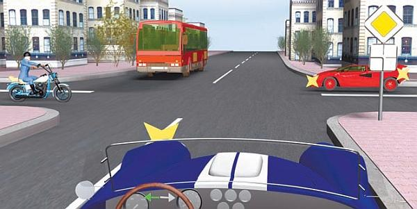
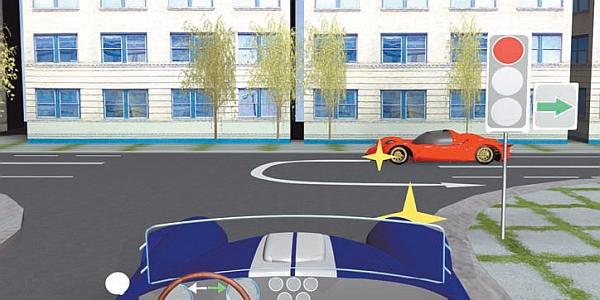
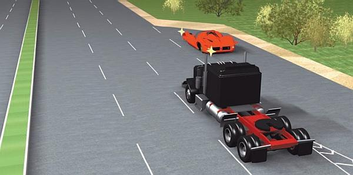
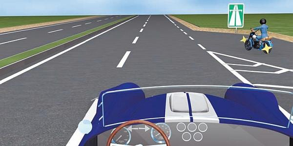
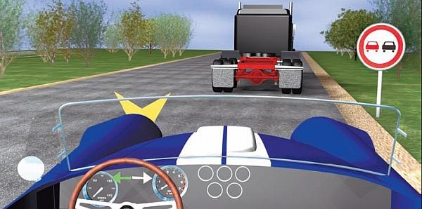
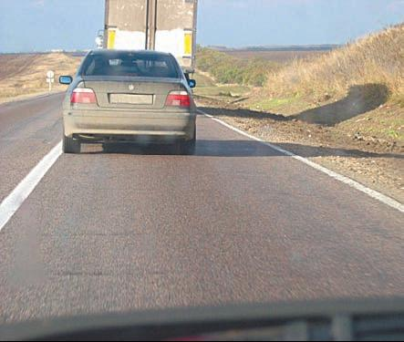
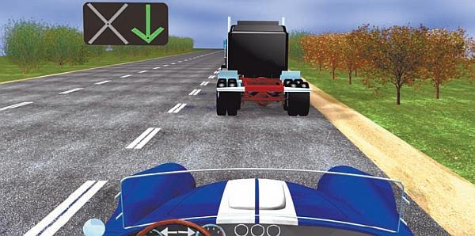
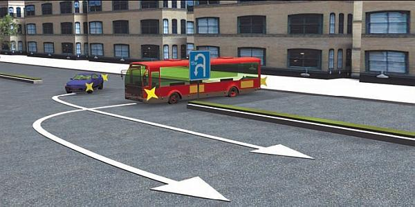

Что необходимо отслеживать в первую очередь….
Существуют дорожные ситуации, с которыми сталкиваются все без исключения водители. Это наиболее распространенные и типичные ситуации, например проезд через пешеходные переходы, проезд перекрестков, обгон, перестроение, вливание в транспортный поток и т. д. Далее мы рассмотрим, на что в первую очередь необходимо обращать внимание в таких ситуациях и как правильно вести наблюдение за дорожной обстановкой.
…на перекрестках и в местах скопления пешеходовПроезд нерегулируемого перекрестка в некотором роде напоминает переход проезжей части по нерегулируемому пешеходному переходу. Подъезжая к такому перекрестку, водитель должен вначале посмотреть налево, затем направо и налево и в последнюю очередь – направо. Это обусловлено тем, что траектория движения вашего автомобиля в первую очередь пересечется с траекториями транспортных средств, которые подъезжают к перекрестку с левой стороны.
Обратите внимание, что в данном случае водитель дважды смотрит налево и направо. Это происходит из-за быстро меняющейся ситуации на дороге, когда необходимо своевременно заметить изменения и при необходимости скорректировать свои намерения.
Во время движения внимательно наблюдайте за сигналами, которые подают водители других транспортных средств. Анализируйте полученную информацию, в частности сопоставляйте эти сигналы с движением автомобилей и их расположением на проезжей части (рис. 6.2).

Рис. 6.2. В такой ситуации новичок может растеряться
Зачем это нужно? Приведу пример: водитель планирует выполнить левый поворот или разворот, занимает соответствующее место на проезжей части, но при этом включает указатель правого поворота. Очевидно, что это ошибка, которая может привести к серьезным неприятностям: если руководствоваться указателем поворота, то этот автомобиль можно обогнать слева. А когда вы пойдете на обгон, водитель данного автомобиля начнет делать то, что и планировал, то есть выполнять левый поворот (разворот). В результате случится дорожно-транспортное происшествие, виновником которого будет признан водитель, неправильно указавший направление движения своего автомобиля (включивший правый «поворотник» вместо левого).
ПРИМЕЧАНИЕ
На перекрестках нередко возникают самые разные недоразумения как раз из-за того, что водители не понимают истинных намерений друг друга (рис. 6.3), а также по причине банальной невнимательности.

Рис. 6.3. Сложная ситуация: может показаться, что красная машина будет поворачивать налево
Характерной особенностью перекрестка является скопление на нем транспортных средств, поэтому даже движение на малой скорости не исключает возможности возникновения ДТП.
Необходимо учесть, что зона видимости на перекрестках может быть сильно ограничена стоящими транспортными средствами (особенно крупногабаритными – грузовиками, автобусами), находящимися поблизости от проезжей части строениями, сооружениями, зелеными насаждениями, рекламными щитами и плакатами и т. д. В подобной ситуации нужно ехать на минимальной скорости, пока обзор не улучшится.
На любой дороге особую опасность представляют собой пешеходы, так как их поведение может быть нелогично, абсолютно непредсказуемо (особенно это касается детей), они способны на любые «резкие движения», реакция и способность адекватно оценивать дорожную обстановку у большинства из них оставляет желать лучшего. Поэтому, наблюдая за дорогой, всегда отмечайте для себя точки вероятного появления пешеходов: в первую очередь, конечно, пешеходные переходы, а также магазины, торговые центры, места массового отдыха, пляжи, станции метрополитена, детские площадки, школы и детские сады, проходные крупных предприятий и т. д. Всегда заранее будьте готовы к худшему варианту развития событий, это позволит вам вовремя заметить опасность и предпринять все необходимые меры для предотвращения дорожно-транспортного происшествия.
…при слиянии с транспортным потоком и перестроенииОчень важно уметь вести грамотное наблюдение за дорогой перед и непосредственно во время слияния с плотным транспортным потоком (рис. 6.4). Данный маневр обычно выполняется тогда, когда вы повернули на оживленную трассу и движетесь по полосе разгона, выбирая подходящий момент для перестроения на полосу движения. В данном случае вы должны контролировать обстановку с помощью зеркал заднего вида, а также оборачиваясь назад (не забываем про «мертвую зону»!). Это позволит вам полностью контролировать ситуацию вокруг вашего автомобиля.

Рис. 6.4. Слияние с транспортным потоком
При этом всегда обращайте внимание на скорость движущегося перед вами автомобиля и будьте готовы вовремя затормозить, если он по каким-то причинам начнет снижать скорость и останавливаться (рис. 6.5). Учтите, что большинство дорожно-транспортных происшествий случаются именно так: водитель, слишком отвлекшись на то, что делается у него сзади и по бокам, совершенно перестал смотреть вперед. Следовательно, когда передний автомобиль тормозит, зазевавшийся ударяет его сзади, не успев своевременно среагировать. Как мы уже отмечали выше, виновным в совершении такого дорожно-транспортного происшествия будет признан водитель, ехавший сзади.

Рис. 6.5. Мотоциклист должен уступить дорогу
При смене полосы движения наблюдать за дорожной обстановкой следует примерно по тем же принципам, что и при слиянии с транспортным потоком: отслеживайте дорожную обстановку как сзади и по сторонам, так и спереди. Не забывайте, что в тот момент, когда вы смотрите в зеркало заднего вида, перед вашим автомобилем на проезжую часть может неожиданно выбежать пешеход (особенно если вы в данный момент движетесь по крайней правой полосе).
…при обгонеУмение наблюдать за дорогой приобретает особо большое значение при обгоне, ведь он по праву считается одним из наиболее трудных и опасных маневров (рис. 6.6). Многие аварии, повлекшие за собой увечья и гибель людей, случились как раз из-за ошибочных действий водителя при обгоне, неумения им реально оценить ситуацию, игнорирования дорожного знака или разметки, непредсказуемых действий водителя обгоняемой машины и т. д.

Рис. 6.6. Никогда не идите на обгон, увидев такой знак
Отличительной чертой обгона является то, что при его осуществлении водителю приходится оценивать целый комплекс различных факторов. Это и ширина проезжей части, и расстояние до встречного и обгоняемого автомобилей, и их скорость движения, и скорость сближения с обгоняемым автомобилем, и технические характеристики своей машины и т. д. Нередко причиной серьезных аварий являются ошибки, которые совершил водитель при оценке именно этих параметров.
Перед тем как приступить к обгону, водитель должен убедиться, что его осуществление не создаст помех для других участников дорожного движения. Вначале необходимо точно оценить обстановку на дороге перед собственным автомобилем (нет ли запрещающих обгон знаков, сплошной осевой линии разметки, встречных автомобилей). Не стоит забывать, что в соответствии с Правилами дорожного движения обгон запрещен в перечисленных ниже местах:
> на регулируемых перекрестках с выездом на полосу встречного движения, а также на нерегулируемых перекрестках при движении по дороге, не являющейся главной (за исключением обгона на перекрестках с круговым движением, обгона двухколесных транспортных средств без бокового прицепа и разрешенного обгона справа);
> на пешеходных переходах при наличии на них пешеходов;
> на железнодорожных переездах и ближе чем за 100 метров перед ними;
> транспортного средства, производящего обгон или объезд;
> в конце подъема и на других участках дорог с ограниченной видимостью с выездом на полосу встречного движения.
Если водитель едущего перед вами автомобиля включил сигнал левого поворота, обгон выполнять нельзя, вероятно, он намеревается совершить левый поворот, либо развернуться, либо просто перестроиться в левый ряд. Если вы все же решите пойти на обгон, то спровоцируете столкновение. Не исключено также, что включением левого «поворотника» вас информируют об имеющейся впереди опасности, которую по ряду причин вы не можете обнаружить. Так часто поступают водители крупногабаритных транспортных средств, ведь у водителя заднего автомобиля зона видимости сильно ограничена как раз из-за больших габаритов едущего перед ним транспорта.
Перед тем как идти на обгон, необходимо также оценить количество свободного пространства перед вашей машиной и решить, достаточно ли его для осуществления маневра. Не забывайте учитывать скорость автомобиля, который вы намереваетесь обогнать, а также способность собственного автомобиля к быстрому разгону. Знайте, что на правильность оценки свободного пространства негативно влияют повороты и подъемы дороги (рис. 6.7).

Рис. 6.7. Не уверен – не обгоняй!
Необходимо оценить свободное расстояние между обгоняемой машиной и находящимся перед ней автомобилем: вам должно хватить его для возврата на свою полосу после обгона. Иначе идти на обгон нельзя, так как вы просто не сумеете возвратиться на свою полосу.
Перед началом обгона включите указатель левого поворота и сразу выключите после того, как покинете свой ряд, иначе у водителей движущихся сзади автомобилей может сложиться впечатление, что вы планируете не выполнить обгон, а повернуть налево или развернуться (рис. 6.8).

Рис. 6.8. Светофор разрешает обогнать грузовик по реверсивной полосе
Не стоит перестраиваться для совершения обгона, слишком приблизившись к обгоняемому автомобилю. Необходимо соблюдать такую дистанцию, которая бы позволяла перестроиться до непосредственного сближения с обгоняемым автомобилем. Это обусловлено тем, что едущий впереди автомобиль может неожиданно замедлить движение в то время, когда вы будете разгоняться. Тогда вы можете не успеть принять меры для предотвращения аварии.
Перед тем как вернуться на свою полосу движения, включите сигнал правого поворота и обеспечьте достаточное расстояние между своим и обгоняемым транспортным средством, исключающее подрезание обгоняемого.
Старайтесь завершить обгон максимально быстро. Не задерживайтесь на встречной или соседней полосе, а также как можно быстрее преодолевайте «мертвую зону» обгоняемого транспортного средства.
ПРИМЕЧАНИЕ
Возвращаться на свою полосу движения можно лишь после того как в зеркале заднего вида будет полностью видна передняя часть обгоняемого автомобиля.
Для того чтобы маневр был успешным, не переставайте контролировать дорожную обстановку, внимательно наблюдайте за происходящим как до, так и в процессе выполнения обгона.
Наблюдение за дорожным покрытиемВодитель должен постоянно следить не только за происходящими на дороге событиями и находящимися на ней объектами, но и наблюдать за поверхностью проезжей части и ее состоянием. Ведь не секрет, что на разном дорожном покрытии автомобиль ведет себя совершенно по-разному.
Если дорога прямая, не имеет подъемов и спусков, то в условиях хорошей видимости она просматривается на достаточно большое расстояние.
ВНИМАНИЕ
Если вы видите, что на проезжей части скоро сменится дорожное покрытие (например, после асфальтового покрытия начнется грунтовая дорога), обязательно уменьшите скорость движения. Во-первых, изменится коэффициент сцепления колес с поверхностью проезжей части, а во-вторых, подобные «переходы» редко бывают плавными, поэтому при движении на высокой скорости можно повредить колеса или подвеску автомобиля.
На дорогах, которые имеют много поворотов или подъемов и спусков, опережающее наблюдение вести невозможно. Рекомендуется уменьшить скорость движения и внимательно следить за предупреждающими знаками, которые заранее проинформируют вас об опасности.
При движении по дороге с некачественным покрытием чаще смотрите на пространство непосредственно перед вашей машиной. Однако не стоит забывать «правило 12 секунд», о котором мы говорили выше. Совместить оба способа наблюдения можно, уменьшив скорость движения, тогда вы будете замечать все необходимое как в непосредственной близости от автомобиля, так и поодаль.
Распространенные ошибки, допускаемые водителями при наблюдении за дорогойКак уже отмечалось выше, далеко не все водители умеют правильно наблюдать за дорогой, причем это касается не только новичков (что объяснимо), но и их более опытных коллег. Далее мы кратко остановимся на наиболее характерных ошибках, которые допускают водители при ведении наблюдения за дорогой.
Первая ошибка заключается в том, что при анализе ситуации водитель не в состоянии создать целостную картину дорожной обстановки в данный момент и ориентируется лишь по ее фрагментам, причем не всегда самым существенным. Например, сосредоточившись на том, что делается впереди, он совершенно перестает контролировать ситуацию сзади или по сторонам автомобиля. Такая беспечность (а вернее – неумение полностью контролировать ситуацию на дороге) может привести, например, к столкновению при смене полосы движения или развороте (рис. 6.9).

Рис. 6.9. Пример аварийной ситуации на развороте
Многие новички допускают массу ошибок при оценке дорожно-транспортной ситуации во время движения на относительно высокой скорости. Они не замечают некоторых дорожных знаков, из-за невнимательности могут проигнорировать даже запрещающий сигнал светофора, упустить из виду приближающийся по примыкающей дороге автомобиль и т. д. Поэтому учиться вести наблюдение за дорогой следует на небольших скоростях.
Часто водители не умеют правильно расставить приоритеты и уделяют повышенное внимание не тому, чему следовало бы. Например, при приближении к перекрестку в первую очередь необходимо смотреть на светофор или на регулировщика, а не на подъезжающие по пересекаемой дороге транспортные средства. Если на небольшом участке дороги стоит много дорожных знаков, то знаки сервиса в большинстве случаев будут иметь меньшее значение для водителя, чем, например, знаки приоритета или запрещающие знаки. Более подробно эта тема раскрывается ниже, в разделе «Анализ дорожно-транспортной ситуации».
Некоторые водители сталкиваются со следующей проблемой: они все видят и замечают, правильно определяют, на что необходимо обращать внимание в первую очередь, но вот анализировать полученную информацию и принимать на ее основании правильные решения они не умеют. В сложной дорожной обстановке такой водитель может растеряться и даже потерять самообладание, хотя у него есть все возможности для того, чтобы избежать опасности.